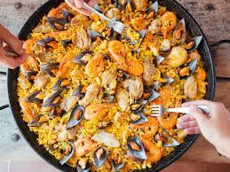

Paila

Description
Paila is a traditional Ecuadorian soup made with seafood, yuca, and a variety of other ingredients. The dish gets its name from the clay pot, or "paila,"
in which it is typically prepared. To make paila, first sauté onions, garlic, and tomatoes in oil, then add fish or seafood broth and bring to a simmer.
Add yuca, green plantains, and other vegetables such as carrots and peas, and continue cooking until the vegetables are tender.
Finally, add shrimp, clams, or other seafood, along with cilantro, cumin, and other seasonings to taste.
Serve hot with a side of rice or toasted corn kernels. Paila is a hearty and flavorful dish that is perfect for a chilly evening or as a main course
for a special occasion.
ingredients
- 1 lb. shrimp, peeled and deveined
- 1 lb. clams, scrubbed and cleaned
- 1 lb. yuca, peeled and diced
- 2 green plantains, peeled and diced
- 1 large onion, chopped
- 4 garlic cloves, minced
- 2 tomatoes, chopped
- 2 carrots, peeled and diced
- 1 cup frozen peas
- 8 cups fish or seafood broth
- 2 tablespoons olive oil
- 1/4 cup chopped fresh cilantro
- 1 tablespoon ground cumin
- Salt and pepper to taste
Steps
- Heat the olive oil in a large pot or clay paila over medium heat.
- Add the onions, garlic, and tomatoes and cook until the onions are translucent.
- Pour in the fish or seafood broth and bring to a simmer.
- Add the yuca, green plantains, carrots, and peas and cook until the vegetables are tender.
- Add the shrimp and clams and continue cooking until the seafood is cooked through.
- Stir in the cilantro, cumin, salt, and pepper to taste.
- Remove from heat and serve hot with rice or toasted corn kernels on the side.